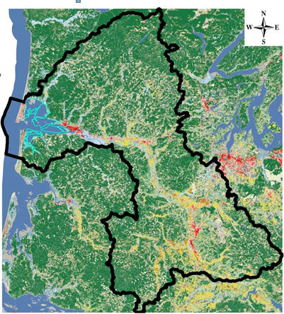

Case Study: Chehalis Basin
At a glance
Primary Partner: Earth Economics
Completed: May 2010
Models: Group Beneficiaries, Flood, Flood Source
Maps: Residents at Risk, Farms at Risk, Floodwater Source, Slope, Forest Successional Stages, Vegetation Types, Percent Vegetation Cover, Percent Impervious Surface, Green Infrastructure, Carbon Sequestration Stored by Vegetation, Carbon Storage in Vegetation, Carbon Storage in Soils, Release of Carbon, Snow Presence, Monthly Precipitation, Forest Fire Frequency
Highlights: First use of ARIES Flood Module prototype
Lessons Learned: Inadequate hydrological data to create accurate hydrologic models resulted in only preliminary maps
Practical application
ARIES allowed, for the first time, a truly integrated approach to flood protection, utilizing extensive information from geographic information system mapping and data and will have the capacity to run and test different hydrological models. ARIES is being designed is to show the hypsometric curves for each subwatershed. River and stream flow and the flood level estimates will be provided with a hydrological model and based on slope, rainfall, infiltration, impermeable surfaces, snow, temperature, levees, bridges, dams, and other data derived from each subbasin. This will provide water elevation data in each subwatersheds, flood flows and enable simulation of flood protection options.

ARIES is built on basic science and our understanding of how natural systems work. The better the data on hydrology, topography, soils, and other determining factors are, the better ARIES can perform. Ecosystem services (ES), such as flood protection are concerned with the way natural systems affect people. With this in mind, ARIES produces four types of models, based on GIS and other data: 1) Beneficiary models; 2) Provisioning models; 3) Sink models and 4) Critical vector models (not yet fully developed).
Initial ARIES mapping and results for the Chehalis River Basin, excluded a hydrological model, but utilized geographic information systems data specific to the Chehalis River Basin. Mapping and understanding the beneficiaries, provisioning and damagers of flood also sets in place the basis for a funding mechanism that can be developed for the Flood Authority.
StepsIn the case of the Chehalis River Basin and flood protection, the basic GIS data was first gathered, then through complex mathematical procedures brought into compatibility (because rainfall data, slope, vegetation cover and other data are often assembled on different scales). Next, conceptual models for each of the beneficiary, provisioning and sink systems were constructed. These models are currently based on many assumptions. To fully develop this model would require close collaboration with the Flood Authority, Army Corps of Engineers, utilizing the best available data, LIDAR and hydrologic models. The final maps produced do represent real results using real data from the Chehalis River Basin for examining flood protection. The beneficiary maps are more accurate than the final flood protection maps because the hydrology not fully included (or understood), and these models require further refining. The provisioning maps in particular should be seen as a very preliminary and incomplete rendition of what could be produced with further work. Modeling Flood Scenarios | ||
|
Providing a
working example of how ARIES can differentiate between
project proposals was outside the scope of this study. The
ARIES team is currently developing scenario analysis with
actual data from the Chehalis River Basin. A discussion of
this planned scenario generation tool follows. One strength of
the ARIES technology to allow good scenario generation is
the simultaneous mapping of benefits resulting from
ecosystem services, the beneficiaries that receive them, and
the flows of water, matter, energy or information that
connect benefits or damages to beneficiaries. Because of the
mapping of flows, ARIES will be capable of estimating not
only the potential provision of ecosystem services, such as
flood protection, but also levels of value or damage
provided to specific beneficiary groups. A work session in
the Chehalis River Basin, running an ARIES flood scenario
analysis would proceed as follows: 1. An operator would
select the area of interest, e.g. the upper Chehalis
watershed and initiate a baseline flow analysis. This would
source the integrated database of GIS, levee, dam,
floodplain and other data to configure and produce
probabilistic models of flood source, flood protection, and
beneficiary assessment data for use in modeling. This serves
as a basis to compute flood protection scenarios.
A scenario generator will change the model parameters based on user inputs for different actions in subwatersheds such as a levee, dam, elevated structures, land use changes or increased retention from wetland restoration or other flood protection actions. These action scenarios can be combined with different rainfall and flood source scenarios to provide a variety of flood scenario results. With this, the Flood Authority or other users can test the robustness of one flood action with different rainfall, temperature, snow, groundwater saturation states.
Please contact Earth Economics with your questions and feedbackEmail info@eartheconomics.org Phone +1 (253) 539-4801 |
||